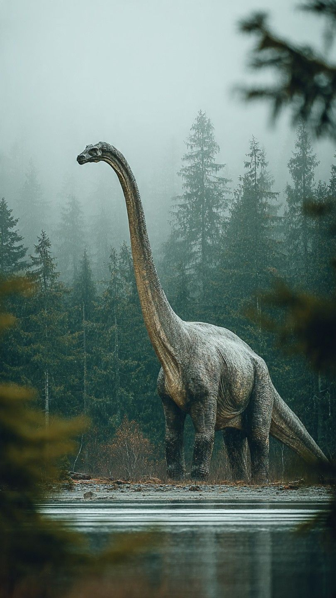

Кто такие динозавры
Динозавры — группа пресмыкающихся, которые появились около 230 миллионов лет назад в триасовом периоде и господствовали на суше до конца мелового периода, примерно 66 миллионов лет назад. Учёные описали уже больше тысячи видов: от крошечных пернатых охотников размером с курицу до гигантов длиной с трёхэтажный дом.
По способу питания динозавров удобно делить на три группы:
Хищные динозавры
Почти все хищные динозавры относятся к тероподам — двуногим ящерам с острыми загнутыми зубами и когтями. Они ходили на мощных задних лапах, а передние у многих были заметно короче. Именно от небольших тероподов позже произошли птицы.
Самые известные хищники — тираннозавр, спинозавр и велоцираптор. Спинозавр был длиннее тираннозавра и, вероятно, охотился на рыбу в реках, а велоцираптор был ростом с индюка и покрыт перьями.
- Самый крупный: спинозавр — около 15 м в длину.
- Самый известный: тираннозавр — один из сильнейших укусов среди наземных животных.
- Один из самых маленьких: микрораптор — меньше метра, с четырьмя «крыльями».
Травоядные динозавры

Травоядных динозавров было больше, чем хищников, и выглядели они очень по-разному. Зауроподы, например диплодок и аргентинозавр, имели длинную шею и хвост и дотягивались до верхушек деревьев. Это самые большие животные, когда-либо ходившие по суше.
Другие травоядные защищались от хищников броней и оружием: у трицератопса были рога и костяной воротник, у стегозавра — пластины на спине и шипы на хвосте, а анкилозавр был покрыт костными щитками и носил на хвосте тяжёлую булаву.
- Зауроподы — гиганты с длинной шеей.
- Цератопсы — рогатые динозавры с воротником.
- Орнитоподы — «утконосые» динозавры с сотнями зубов.
- Анкилозавры и стегозавры — бронированные динозавры.
Всеядные динозавры

Некоторые динозавры ели и растения, и мелких животных. К ним относят галлимима, похожего на страуса, и овираптора. Овираптора долго считали похитителем яиц, но позже выяснилось, что найденный рядом с кладкой динозавр высиживал собственные яйца.
Почему динозавры вымерли?
Около 66 миллионов лет назад на территорию современного полуострова Юкатан упал астероид диаметром около 10 км. Пыль и сажа закрыли Солнце, климат резко похолодал, растения стали погибать, а за ними — травоядные и хищники. Выжили только птицы — прямые потомки динозавров.
Динозавры в России
Остатки динозавров находят и в России. В Амурской области описаны утконосые динозавры олоротитан и амурозавр, а в Забайкалье — небольшой пернатый травоядный кулиндадромей.